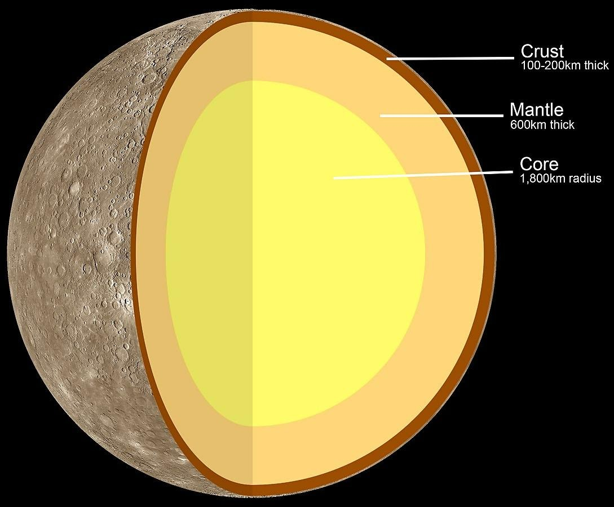

Mercury
Mercury is the closest planet to the Sun but, perhaps surprisingly, it does not have the highest temperatures. It is the second densest planet of the Solar System, but also the smallest planet. The structure of Mercury makes it the most similar planet to Earth.
Formation
It is theorized that Mercury was formed about 4.5 billion years ago when gravity pulled swirling gas and dust together to form the small planet. Its small size but enormous core is theorized to be the result of a collision with another giant object that stripped much of its surface.
Distance, Size and Mass
Mercury is the closest planet to the Sun, at a distance of 57.91 million kilometers / 35.98 miles or 0.4 AU away. It takes sunlight 3.2 minutes to travel from the Sun to Mercury. Mercury has a radius of 2.439 km or 1516 mi, and a diameter of 4.879 km or 3.032 mi. It is about the size of the continental United States, slightly bigger. It has a mass of about 3.285 × 10^23 kg or about 5.5% that of Earth. Despite being the smallest planet from the Solar System, it is the second densest planet in the Solar System, with a density of 5.43 g/cm³ after Earth. For comparison, Mercury’s size is about a third of Earth, and Earth has a density of 5.51 g/cm³.

Structure
Mercury is a terrestrial planet having three main layers: a core, mantle and crust. Mercury’s crust has no tectonic plates and its iron core is enormous, making up 85% of the planets radius while Earth’s inner and outer core, account for about 55%. Because of the core’s unusual size, it influences Mercury’s overall size by causing it to shrink. The iron core has slowly cooled and contracted for about 4.5 billion years. By doing this, it pulled the surface inward, and thus has reduced the planet’s size between 1 – 7 km or 4 miles. The planet consists of about 70% metallic and 30% silicate material leading to its high density and thus placing it as the second densest planet. It is believed that if the effects of the gravitational compression were to be factored out from both Mercury and Earth, Mercury would take the first place as the densest. This density also indicates that its core is huge and rich in iron. Mercury’s crust is estimated to be around 35 km or 22 mi thick.

Life Habitability
Extreme temperatures both cold and hot make it unlikely that life may develop there. The temperatures and solar radiation that characterize this planet are most likely too extreme for organisms to adapt to.
Satellites
Mercury doesn’t have any known satellites even though many objects much smaller than Mercury have. It is believed that moons form in the same time as their parent planets and in the case of Mercury, all the materials around it were used up by the planet leaving almost nothing left so that a moon could be formed. Another theory suggests that Mercury couldn’t have a moon because of its closeness to the Sun. Because of this, the Sun’s greater gravity force would overcome that of Mercury and pull any objects around it, towards itself. Overall, Mercury’s closeness to the sun prevents it from ever having a satellite.